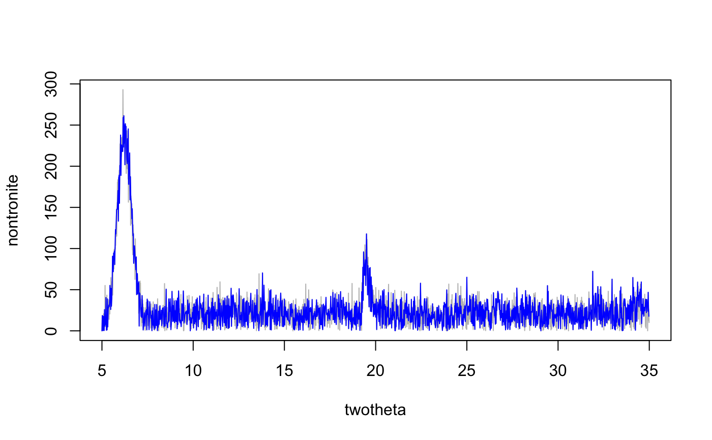

resample.twotheta.RdResample an XRD pattern along a user-defined twotheta resolution via local spline interpolation.
resample.twotheta(twotheta, x, tt.min = min(twotheta), tt.max = max(twotheta), new.res = 0.02)
| twotheta | a vector of twotheta value |
|---|---|
| x | a vector of diffraction intensities corresponding with twotheta values |
| tt.min | new minimum twotheta value, defaults to current minimum |
| tt.max | new maximum twotheta value, defaults to current maximum |
| new.res | new twotheta resolution, defaults to 0.02 |
Sometimes XRD patterns are collected at different resolutions, or at a resolution that is too great for full pattern matching. This function can be used to resample patterns to a consistent twotheta resolution, or to decimate massive patterns.
A dataframe with the following columns
new sequence of twotheta values
resampled diffraction intensities
http://casoilresource.lawr.ucdavis.edu/
data(rruff.sample) # resample single pattern nontronite.resamp <- with(rruff.sample, resample.twotheta(twotheta, nontronite, new.res=0.02) ) # plot original vs. resampled pattern plot(nontronite ~ twotheta, data=rruff.sample, type='l', col='grey')lines(nontronite.resamp, col='blue')